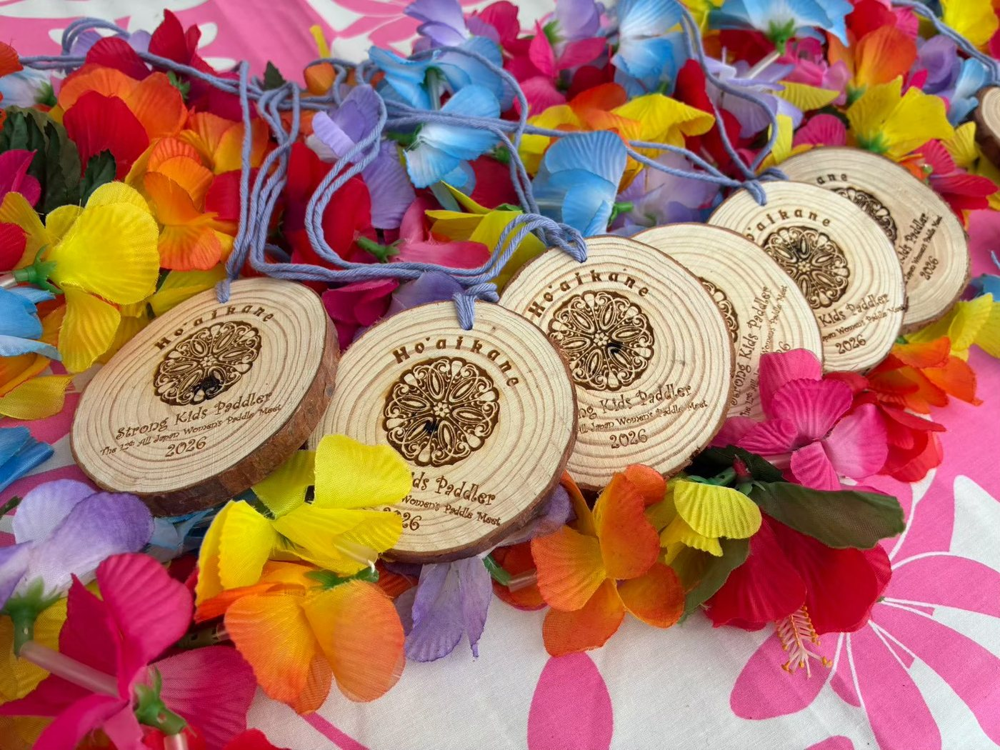

HO'AIKANE
Beyond the Waves, Beyond Myself
This page is still being prepared. Items marked [TBC] are provisional and not yet confirmed.
Ho'aikane is the "All Japan Women's Paddle Meet," a paddle race for women held in Chigasaki. Women are the stars of the race. Paddlers from across Japan come together and work as one on the waters off Chigasaki.
In Hawaiian, Ho'aikane means "to become friends." Women who love the same sport meet and connect across club lines. We have held this meet in Chigasaki hoping it would be that kind of beginning, and in 2026 it reached its 12th year.
Dates and details for the next meet will be posted on this page as soon as they are decided. [TBC]
From the 12th meet in 2026: wooden medals engraved with the Ho'aikane emblem and champion pendants were presented.


| Item | Details |
|---|---|
| Event name | All Japan Women's Paddle Meet Ho'aikane |
| Location | Chigasaki |
| Dates | In preparation [TBC] |
| Classes and distances | In preparation [TBC] |
| Fees | In preparation [TBC] |
| Entry | In preparation [TBC] |
For details, please see the 2025 event site below (in Japanese).